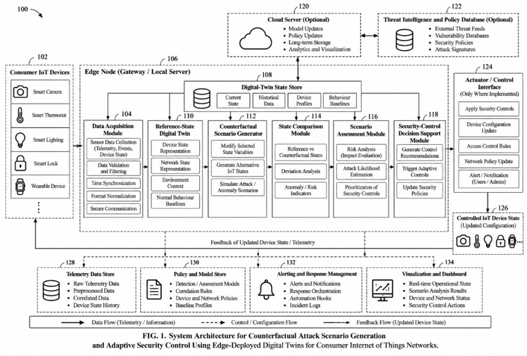

The problem
A detector that keeps learning is a detector you can teach
Consumer IoT networks — cameras, locks, plugs, bulbs, sensors — are increasingly defended by models that run on a local edge gateway and retrain continuously on the telemetry they collect. That retraining is what keeps the detector current as a household changes. It is also its most exposed surface: an adversary who can introduce falsified or mislabelled training data can steer the model into accepting hostile behaviour as ordinary.
Existing poisoning defences are reactive. Anomaly filtering, reputation scoring and robust aggregation each inspect a contribution after it arrives, and judge it only against present or historical observations. A contribution engineered to resemble ordinary traffic passes unchallenged — and clean-label poisoning, which alters no label at all, defeats the entire family.
The mechanism
Commit to the future first, then test against it
Every physical device is mirrored by a holographic digital twin that models it as five partial projections rather than one state vector, and commits — in advance — to twenty counterfactual trajectories describing how the device would behave if nothing were wrong.
An incoming retraining update is grafted onto a small trusted core, a shadow model is trained, and that shadow's behaviour on the committed futures yields a Counterfactual Consistency Score. The threshold it is judged against is calibrated at run time from honest traffic on that specific fleet, not hard-coded.
The ordering is the security invariant: the futures must exist before the observation they are used to judge.
System architecture
Where each decision is taken

Results
Thirteen decisions, thirteen correct
| Crafted as | CCS | Gate | Decision |
|---|---|---|---|
| Honest contribution | 0.910 | 0.857 | accepted |
| Label flipping | 0.629 | 0.857 | quarantined |
| Gradual poisoning | 0.801 | 0.857 | quarantined |
| Backdoor trigger | 0.659 | 0.857 | quarantined |
| Sybil flood (8 shards) | 0.677–0.730 | 0.907 | quarantined |
| Clean-label poisoning | 0.735 | 0.907 | quarantined |
Clean-label is the decisive row. Its label mix barely moves, so every distributional check admits it; it is caught only by cross-checking its labels against the trusted model's own reading of its rows. Sybil shards face a raised gate because the burst of unseen contributor identities triggers the novelty penalty.
Running it
Twelve steps, each a deliberate action
The console is a multi-page application with no JavaScript on any step page: every control is an HTML form that submits one action and redirects. Nothing happens unless an operator asks for it.
git clone https://github.com/susanth1436/CIHDT.git cd CIHDT pip install -r requirements.txt python cli.py --walk # all twelve steps on the terminal, ~20 seconds python run.py # the operator console at http://127.0.0.1:8000
Outcome
Patent
An Indian Patent Application has been filed for System and Method for Counterfactual-Driven Adaptive Security Control and Verified Model Updating in Edge-Deployed Digital Twins for Consumer Internet of Things Networks.
The contribution claimed is a method — a decision mechanism implementable on any edge gateway, independent of the model family.
Scope
What this establishes, and what it does not
Established
- Futures committed in advance can be scored against reality.
- The score separates honest contributions from five poisoning strategies without error across thirteen decisions.
- The accept threshold can be derived at run time from the deployed fleet.
- Promotion and recovery are gated rather than automatic.
Not established
- Superiority over reactive baselines — no baseline was re-implemented against the same fleet. That is Phase II.
- Generality across seeds: the figures characterise one run on one fleet.
- Robustness to an adaptive adversary who knows the Consistency Score itself.